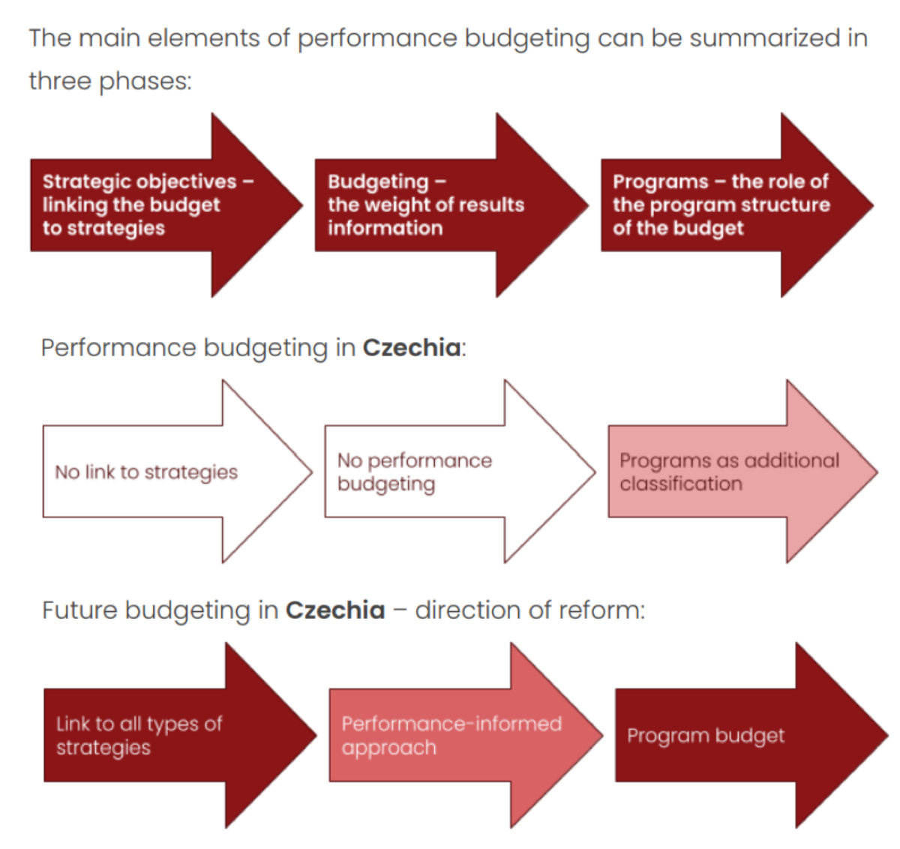

3.3 — Smart Expenditure Management
Chapter 3: Fiscal-Monetary Policy Nexus
Options for Fiscal Consolidation
Theoretical literature says that fiscal solvency is kept by "passive" adjustments of government revenues using non-distortionary lump-sum taxes. But this is a technical, not a realistic idea — lump-sum taxes don't exist in real life.
Real-world research shows that successful fiscal consolidations usually use a mix of (distortionary) tax rises and spending cuts. When it comes to spending cuts, there are two very different approaches:
Across-the-Board Cuts
Every ministry loses the same percentage of its budget. This is simple and seems "fair" — but it hurts efficient ministries the most and often hits the most useful spending (especially investment). It's a rough approach that doesn't tell good programs apart from waste.
Targeted, Efficiency-Enhancing Cuts
Spending is looked at program by program. Bad programs are cut or changed; good programs are kept or even given more money. This needs much more analysis work but gives better results. Two key tools make this possible: performance budgeting and spending reviews.
Traditional vs. Performance Budgeting
📋 Traditional Budgeting
- Focuses on the allocation (spending) of resources without monitoring outcomes
- Usually based on incremental changes to previous spending ("last year + X%")
- Hard to check if spending is effective, measure efficiency, or do useful spending reviews
- The state budget becomes more of a bookkeeping record than a tool for managing public policies
- Does not connect spending well enough to specific strategic goals and expected results
🎯 Performance Budgeting
- A new, structured way of looking at public spending
- Shows not only the amount of money spent, but also how it relates to expected results and impact
- Connects spending to specific goals and results of public policies
- Improves efficiency, transparency, and accountability of public administration
- Requires spending to be sorted by the purpose of public policies
How Performance Budgeting Works

The diagram shows the theoretical model and Czech reform path:
📐 Three Phases
- Strategic objectives — the budget is linked to public strategies
- Budgeting — budget decisions use information on results
- Programs — spending is organized in programs linked to policies
🇨🇿 Status Quo
- No clear link between budget and strategies
- No real performance budgeting
- Programs serve only as administrative classification
🔄 Target State
- Link budget to public strategies
- Use a performance-informed approach
- Create a genuine program budget
The Proposed Reform (CVF, 2025)
Public finance management reform must rest on 3 pillars:
- Goal-based structure: Public finances, and especially the state budget, are structured according to expenditure policies and their objectives; the budget classification reflects these objectives.
- Evaluation process: There is a process for setting and evaluating the objectives of expenditure and revenue policies.
- Transparent documentation: Budget documentation and the state final account primarily present expenditures according to a goal-based classification.
Stakeholders in Performance Budgeting
| Stakeholder | Key Roles |
|---|---|
| 🏦 Ministry of Finance |
|
| 🏛️ Spending Entities |
|
| 🏛️ Parliament |
|
| 🔍 Audit Offices |
|
Spending Reviews
📋 Current Situation
- State budget is predominantly formed through incremental changes (usually increases) to historical figures, not based on actual needs analysis
- In times of fiscal consolidation, across-the-board cuts hurt efficient ministries the most and often cut useful (often investment) spending
- Too much information gap between the MoF and other ministries when judging what spending is really needed
🔍 Spending Reviews
- A check of spending based on policy goals
- Better value for money
- A data-based discussion about priorities
- Transparency and pressure for efficient public administration
- Better budget planning and the ability to find real savings opportunities
Summary & Conclusions
Key takeaways from Chapter 3:
- Fiscal dominance is harmful for price stability.
- Avoiding it needs good institutional design — independent central banks with a clear price stability goal and a ban on monetary financing.
- The dynamic budget constraint shows that $r$ vs $g$ determines debt sustainability.
- Four policy regimes exist (MP/FP active/passive); the textbook case is MP active + FP passive.
- Czechia does not have a serious fiscal dominance problem, but long-term health needs more policy action.
- A mix of tax rises and spending cuts will be needed.
- Czechia is behind in performance budgeting and spending reviews — this is an easy area to find smart cuts and savings.
- Performance budgeting connects spending to goals and results instead of just tracking how much money goes in.
- Spending reviews check value for money using data.